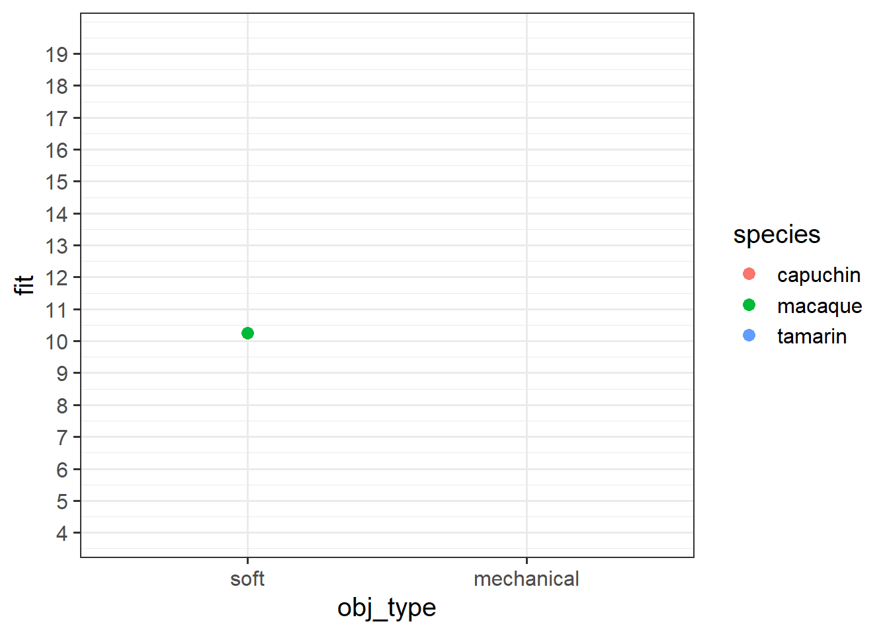

| variable | description |
|---|---|
| hrs_sleep | hours slept the previous night (to the nearest 15 mins) |
| alc | was alcohol consumed the previous evening? ('y'=yes, 'n'=no) |
| sdmt | score on the Symbol Digit Modalities Task (SDMT), a measure of processing speed (range 0 to 100) |
Exercises: Interactions!
Processing a hangover
Dataset: hangover_speed.csv
How is hours of sleep associated with processing speed? Is this dependent upon whether or not alcohol was consumed the previous night? 107 participants completed the Symbol Digit Modalities Task (SDMT), a measure of processing speed. Participants also recorded how many hours they had slept the previous night (to the nearest 15 mins), and whether or not they had consumed alcohol.
The dataset is available at https://uoepsy.github.io/data/hangover_speed.csv.
Question 1
Read in the data and provide some simple descriptives.
Hints
- What is the mean score on the SDMT, what is the variability in scores?
- How many people had alcohol the previous night?
- How many hours did people sleep on average? Did this vary between the drinkers and the non-drinkers?
Question 2
Make a plot of SDMT predicted by hours slept, and colour the points by whether or not the participants had drank alcohol.
Can you plot a separate lm line on the graph using geom_smooth for each group (alcohol v no alcohol)?
Hints
- to make
geom_smooth()fit a linear model (lm), remember to usegeom_smooth(method=lm).
- if you have the grouping in the
aes(), then when you addgeom_smooth()it should make a different one for each group!
Question 3
Adding a different geom_smooth(method=lm) for each group is just fitting a different model to each groups’ data - i.e. a slope of sdmt~hrs_sleep for the drinkers and a slope for the non-drinkers.
But we actually want to test if the two slopes are different, and for that we need to create a model which includes the appropriate interaction term.
Fit the model to examine whether the association between hrs_sleep and sdmt is different depending upon alcohol consumption.
Hints
This is the same logic as the air-pollution & APOE-4 example in 9A #it-depends.
Question 4
Interpret each coefficient from your model.
Hints
Our interaction involves a continuous variable (hrs_sleep) and a binary variable (alc). An interpretation of a similar example is in 9A #interpretation.
Question 5
Construct a plot of the model estimated associations between hours-slept and SDMT for drinkers and non-drinkers.
Because we have nothing else in our model, this should end up looking exactly the same as our initial plot in Question 2!
Hints
It all follows the same logic as we have used before:
- make a dataframe of the values of the predictors that we wish to plot across
- using
augment(), add to that the predicted values of the model, and the associated confidence intervals - shove it all in ggplot!
Because we are wanting to plot across multiple predictors (i.e. we want to plot across a range of hrs_slept and both values of alc), try using expand_grid().
Play around with this to see what it does:
# A tibble: 15 × 2
continuous binary
<int> <chr>
1 1 dog
2 1 cat
3 1 parrot
4 2 dog
5 2 cat
6 2 parrot
7 3 dog
8 3 cat
9 3 parrot
10 4 dog
11 4 cat
12 4 parrot
13 5 dog
14 5 cat
15 5 parrotIf you get stuck, a very similar example is in 9A #visualisation.
Question 6
No one in our dataset has slept zero hours, and i’m probably not interested in differences between drinkers/non-drinkers who never sleep.
Refit the model to adjust the intercept to a more meaningful value. Everyone always goes on about 8 hours of sleep being the minimum?
How has the interpretation of your coefficient(s) changed?
Hints
See 9A #mean-centering for an example of mean-centering a predictor in the interaction. Remember that there are multiple ways to do this - you could make a new variable first, or you could do it all inside the model.
The monkeys are back!
Data: ctmtoys.csv
So far, we have analysed the data for two studies (not real!) of the inquisitive nature of monkeys. Initially (week 5 exercises), Liu, Hajnosz & Li (2023) investigated age differences in exploration of novel objects, and found that older monkeys spend on average less time playing with a novel object than their younger counterparts (we looked at this with both with the linear effect of age in years, and by comparing adults to juveniles). Following this Liu, Hajnosz, Xu & Li (2023) wanted to see if monkeys showed a preference for different types of object (i.e. ones with moving parts vs ones that are soft). They found that, after accounting for differences due to age, monkeys showed a significant preference for toys with moving parts in comparison to soft toys.
Xu, Li, Liu & Hajnosz (2023c) are again asking for our help, and this time with a bigger study, of 216 monkeys. They are interested in whether the preference for mechanical toys over soft toys is different for different species of monkey. Both the previous studies were conducted on Rhesus Macaques (a species that have adapted very well to human dominated landscapes), so this study has re-run the same experiment on 69 Capuchin monkeys, 71 Tamarin monkeys and 76 Macaques.
The aim of this study is to investigate the following question:
Are preferences between soft toys vs mechanical toys different for different species of monkey?
The data is available at https://uoepsy.github.io/data/ctmtoys.csv and contains the variables described in Table 1
| variable | description |
|---|---|
| name | Monkey Name |
| age | Age of monkey in years |
| species | Species (capuchin, macaque, tamarin) |
| obj_type | Type of novel object given (mechanical / soft) |
| obj_colour | Main colour of object (red / green / blue) |
| obj_size | Size of object in cm (length of largest dimension of the object) |
| exptime | Time (in minutes) spent exploring the object |
Question 7
As always, begin by reading in your data and making some exploratory plots to get an idea of the distributions we’re dealing with.
Question 8
Try making some initial exploratory plots of the relationships in the data that are relevant to the research question.
Hints
We’re wanting to plot exploration_time and obj_type here, but we’re also wanting to show it for each species. This means we’ll need things like colours, facets, etc.
Question 9
Fit an appropriate model to address the research question.
Think about what we already know from previous studies - we’ll likely want to control for age and for other aspects of objects like size and colour.
Then think about the specific research question and what is needed to test it.
Question 10
Do species differ in their preference for different types of object?
Hints
Think about how the question is worded - there’s no “how”/“what” etc, it’s just “are there differences?” (this is just the same as we did last week, and in 8B #testing-group-differences - try a model comparison?).
Question 11
Now, we want to know how species differ in their preferences for different types of object?
Take a look at the model coefficients.
Question 12
Model coefficients are always relative to some reference point (i.e. capuchins with mechanical toys).
- Change the reference point to Macaques with soft toys.
- Refit the model.
- Interpret the coefficients.
Question 13
The interpretation of interaction coefficients tends to be quite confusing, and invariably it helps to tie these to a visualisation. We’re going to do it manually here, because it’s a very useful learning exercise.
Below are our coefficients of interest from the model, when the reference level for obj_type is “soft” and for species is “macaque”.
...
obj_typemechanical 3.47317 0.76957 4.513 1.07e-05 ***
speciescapuchin 5.41843 0.80728 6.712 1.83e-10 ***
speciestamarin 1.87117 0.80555 2.323 0.02116 *
obj_typemechanical:speciescapuchin -1.51124 1.11855 -1.351 0.17816
obj_typemechanical:speciestamarin -3.05110 1.11480 -2.737 0.00674 ** Grab a piece of paper, and draw the points for each species & obj_type combination, relative to the reference point.
Start with the plot below:

Question 14
Okay, now let’s make a plot in R.
Try running this code in pieces to see what each bit does, and then running it all at once to get the plot.
Does it match with what you sketched in the previous question?
library(effects)
effect("obj_type*species",modelmonkey) |>
as.data.frame() |>
mutate(
obj_type = fct_relevel(factor(obj_type), "soft")
) |>
ggplot(aes(x=obj_type, y=fit, col=species)) +
geom_pointrange(aes(ymin=lower,ymax=upper))
Why use the effects package?
Up to now, when we’ve been plotting our associations of interest we’ve been choosing to construct our plots at the mean of our other predictors.
However, in our current monkey model, we’ve also got a categorical covariate (obj_colour) in our model. What should we do with that?
plotdat <- expand_grid(
age = mean(ctmtoys$age),
obj_size = mean(ctmtoys$obj_size),
obj_colour = ???
obj_type = c("soft","mechanical"), # of interest
species = c("macaque","capuchin","tamarin") # of interest
)We could:
- choose just one colour to plot it at
- make separate plots to each colour
- plot the association of interest holding the colours at their proportions
To achieve a) or b), we can use the strategy we have been using already (make a little dataframe, use augment etc).
However, to achieve c), it is easiest to use something like the effect() function from the effects package. This will also come in handy next semester, as we will use it for plotting effects from more complex models.
Teamwork and Communication
Dataset: teamprod.csv
A company has recently decided to move towards having more structured team-based projects for its employees, rather than giving individual projects. They want better understanding what makes teams work well together. Specifically, they want to know whether the amount of communication in a team is associated with better quality work, and if this is different depending upon the teams’ ‘collective efficacy’ (their belief in their ability to do the work)?
They have collected data on 80 teams. Prior to starting the projects, each team completed a questionnaire measuring ‘collective efficacy’ (the teams’ belief in their ability to succeed at their project), and ‘collective experience’ (a measure of how much relevant experience the team has). At the end of the projects, each team’s work was rated across various measures (timeliness, quality, relevance etc) to provide a metric of ‘work quality’. In addition, information was gathered on the volume of each teams’ communication (via the company’s workspace chat platform).
The data is available at https://uoepsy.github.io/data/teamqual.csv
| variable | description |
|---|---|
| team_id | Team ID |
| commvol | Volume of communication (avg messages per day) |
| exp | Prior experience (Z-scored) |
| colleff | Collective Efficacy measure of team's belief in ability to succeed (range 0 - 70) |
| work_qual | Work Quality measure (metric based on timeliness, quality, relevance etc). Ranges 0 to Infinity |
Question 15
Below, we have provided a regression table, a plot, and a written paragraph.
There are lots of mistakes in the writing (both mismatching numbers and errors in interpretation). Note down as many errors as you can find.
Feel free to read in the data yourself to play around.
Table
| work qual | ||||
| Predictors | Estimates | std. Error | Statistic | p |
| (Intercept) | -25.29 | 15.21 | -1.66 | 0.100 |
| exp | 0.87 | 2.05 | 0.42 | 0.674 |
| commvol | 2.69 | 0.45 | 6.04 | <0.001 |
| colleff | 1.60 | 0.44 | 3.63 | 0.001 |
| commvol × colleff | -0.04 | 0.01 | -2.63 | 0.010 |
| Observations | 80 | |||
| R2 / R2 adjusted | 0.603 / 0.582 | |||
Plot
Writing
Work quality was modelled using multiple regression. Team experience (Z-scored), Communication volume (messages per day) and Collective efficacy (Z-scored) were included as predictors, along with the interaction between communication and collective efficacy. The model explained 80% of the variance in work-quality scores. More experienced teams were found to produce significantly better quality work (\(\beta=0.82, t(74)=0.4, p>.05\)). Volume of communication was significantly associated with work quality (\(\beta=2.68, t(75)=6.17, p<.001\)), suggesting that teams that communicate more produced better quality work. Collective efficacy was also significantly associated with work quality (\(\beta=1.59, t(75)=3.64, p<.001\)), indicating that better quality work will be produced by a team that has collective efficacy (compared to those that do not). A significant interaction (\(\beta=-0.03, t=2.68, p < .09\)) was found between volume of communication and collective efficacy, suggesting that these two predictors are related. Overall these results suggest that for teams that have more collective efficacy, communication is more important in producing quality work.